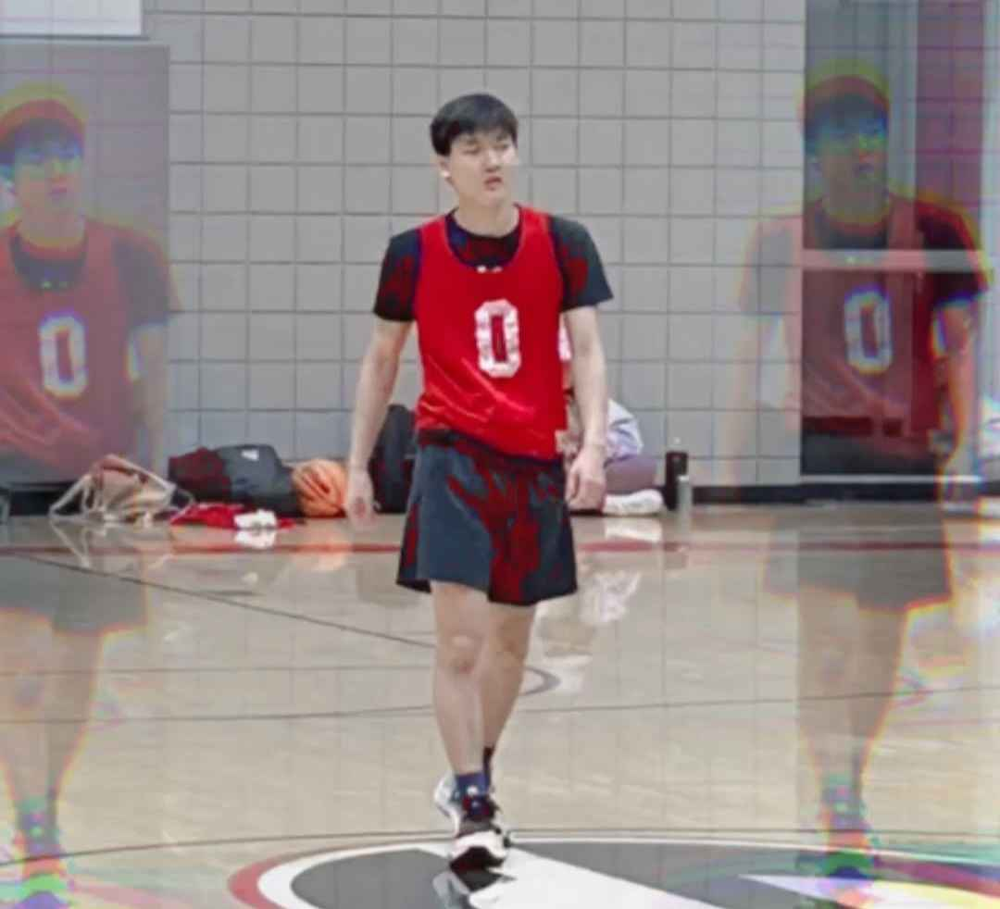
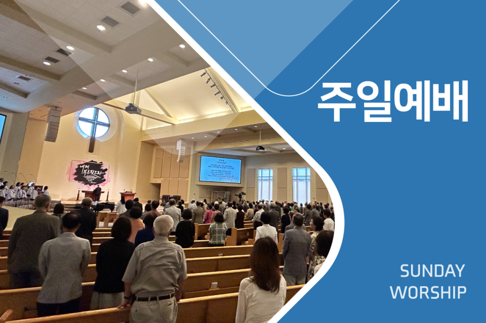

Interests and Experience

Basketball
- Played recreationally and competitively for school and community teams.
- Follow professional basketball events and news, including NBA and international leagues.

YouTube
- Created video content on a variety of topics including music production and sports analysis.
- Familiar with video editing tools like Adobe Premiere Pro and Final Cut Pro.

Music Production
- Produced original music using Logic Pro X.
- Collaborated with peers for performances and digital music distribution.
Youth Summer and Winter Retreat Leader
- Guided 15 students through lessons and activities to encourage positive growth.
- Fostered team-oriented mindsets among participants through structured discussions.
Drama Club Officer
- Organized events and rehearsals, fostering a passion for the arts in younger students.
- Collaborated with middle school drama programs to inspire creativity and engagement.
Orchestra Assistant
- Mentored young percussionists, introducing them to advanced techniques.
- Built a sense of community within the orchestra through collaboration and teamwork.